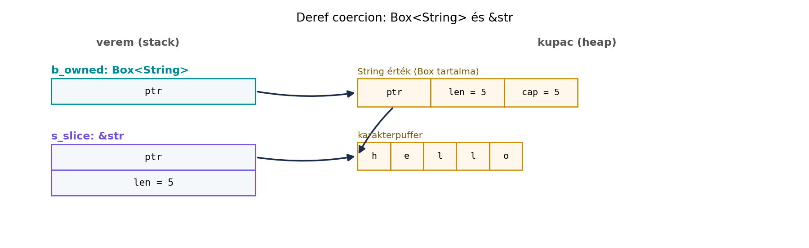

A C++-ban a konverziók, a formázás és a smart pointerek viselkedése
gyakran implicit: az egyargumentumú konstruktorok konvertálnak, az
operator<< túlterhelhető, a shared_ptr a
-> operátort túlterheli, a std::string és a
const char* között szabad az átjárás. A Rust ezeket a
műveleteket explicit, jól meghatározott trait-ekkel szabályozza. A
C++-fejlesztőnek újra kell tanulnia, hogy a konverziókat kérni kell, a
formázás a Display és Debug trait-ekkel
történik, a pointerek használatát pedig a Deref trait
biztosítja. Ez a fejezet a standard könyvtár leggyakrabban használt, az
idiómát meghatározó traitjeit veszi sorra.
Definíció. A From<T> trait a
T típusból való konverziót írja le:
fn from(value: T) -> Self. Az Into<U>
ennek a fordítottja: ha U implementálja a
From<T>-t, akkor a T típus automatikusan
implementálja az Into<U>-t. A TryFrom és
TryInto ugyanez, de a konverzió hibát adhat vissza:
fn try_from(value: T) -> Result<Self, Self::Error>.
Szabály. Saját típushoz mindig a
From-ot vagy a TryFrom-ot implementáljuk, mert
az Into/TryInto automatikusan elérhetővé
válik. A From implementációnak mindig teljesnek és
hibamentesnek kell lennie; ha a konverzió hibázhat, használjunk
TryFrom-et. A ? operátor a
From-ot használja a hibakonverzióhoz: ha a hiba típusa
E1, a függvény hibatípusa E2, és
E2 implementálja a From<E1>-et, akkor a
? automatikusan hívja az E2::from(E1)-et.
Definíció. Az AsRef<T> lehetővé
teszi egy típusból &T referencia készítését:
fn as_ref(&self) -> &T. A
Borrow<T> hasonló, de szemantikailag erősebb: a
kölcsönzött értéknek ugyanazt a hash- és egyenlőség-relációt kell
képviselnie, mint az eredeti típus. A ToOwned a
Borrow fordítottja:
fn to_owned(&self) -> Owned, ahol Owned
egy olyan típus, amely Borrow<Self>-et
implementál.
Szabály. Az AsRef-et gyakran használjuk
függvényparaméterekben, hogy a hívó rugalmasan adhasson át
String, &str vagy más típust. A
Borrow-t elsősorban a HashMap kulcstípusainál
használjuk: a HashMap<K, V> get metódusa
&Q paramétert vár, ahol
K: Borrow<Q>. Ez lehetővé teszi, hogy
String kulcsú mapet &str-rel
keressünk.
Definíció. A Display trait a
felhasználóbarát, humán olvasásra szánt formátumot írja le:
fn fmt(&self, f: &mut Formatter<'_>) -> fmt::Result.
A Debug trait a fejlesztői, diagnosztikai formátumot
szolgálja. A Debug automatikusan
derive-olható, a Display-et kézzel kell
írni.
Szabály. A Display implementálása után
a típus automatikusan elérhető a {} formátummal, a
Debug pedig a {:?}-val. A formázási makrók
(println!, format!, stb.) a
format_args! makrót használják, és a
formátum-specifikátorok a std::fmt modulban vannak. A
Debug minden típushoz legyen elérhető, a
Display-et csak akkor írjuk, ha valódi, felhasználóbarát
szöveges reprezentáció létezik.
Definíció. A Default trait az „üres”
vagy alapértelmezett értéket adja: fn default() -> Self.
A FromStr a szövegből való parsingot írja le:
fn from_str(s: &str) -> Result<Self, Self::Err>.
A str::parse metódus használja ezt a traitet.
Szabály. A Default-ot gyakran
#[derive(Default)]-vel implementáljuk, ha minden mezőnek
van Default-ja. A FromStr-t a szöveges
protokollok, parancssori argumentumok feldolgozásához használjuk, és a
hiba típusának egyértelműnek kell lennie.
Definíció. A Deref trait definiálja a
* operátor viselkedését, és lehetővé teszi a deref
coercion-t: ha a T implementálja a
Deref<Target=U>-t, akkor a &T
automatikusan &U-vá konvertálható ott, ahol a
&U típus elvárt.
Szabály. A Deref-et csak smart
pointerekhez és ahhoz hasonló „transzparens” burkolókhoz implementáljuk,
például Box<T>, Rc<T>,
String (Deref a str-re). A Deref
nem használható öröklés-szimulációra: nem helyettesíti a trait-eket, és
a deref coercion nem jelent automatikus altípus-relációt. Ha a
Deref-et túlhasználjuk, a kód nehezen olvashatóvá válik,
mert a metódushívások látszólag független típusokon futnak.
C++-ban egy egyargumentumú konstruktor implicit konverzióként
működik, hacsak nem explicit:
struct Port {
int value;
Port(int v) : value{v} {} // implicit
};
void print_port(Port p) {
std::cout << p.value << '\n';
}
print_port(8080); // működik, az int Port-tá konvertálódikRustban nincs implicit konverzió; a konverziót explicit módon kell kérni:
struct Port { value: u16 }
impl From<u16> for Port {
fn from(value: u16) -> Self {
Port { value }
}
}
fn print_port(p: Port) {
println!("{}", p.value);
}
print_port(8080.into()); // explicit konverzióA különbség: a Rust Into használata világosan jelzi a
konverziót, és a koherencia-szabályok megakadályozzák a kétértelmű vagy
nem szándékos konverziókat.
operator<< túlterhelése vs. DisplayC++-ban a std::ostream& operator<<
túlterhelése a formázás szokásos módja:
struct Port {
int value;
friend std::ostream& operator<<(std::ostream& os, const Port& p) {
return os << "port " << p.value;
}
};Rustban a Display traitet implementáljuk:
impl std::fmt::Display for Port {
fn fmt(&self, f: &mut std::fmt::Formatter<'_>) -> std::fmt::Result {
write!(f, "port {}", self.value)
}
}A Rust megoldás nincs az áramlási operátorra építve, és a formátum-specifikátorok egységesek.
std::hash és
kulcsok vs. BorrowC++-ban a std::map<std::string, int> keresésekor
std::string kulcsot kell adni, vagy a C++14 óta heterogén
keresést kell használni. A Rust HashMap<String, V>
get metódusa &str-t is elfogad a
Borrow trait miatt:
use std::collections::HashMap;
let mut map = HashMap::new();
map.insert(String::from("key"), 42);
// A get &str-t vár, mert a String Borrow<str>.
let value = map.get("key"); // &strC++-ban az osztályhierarchiák természetesek:
class Base {
public:
virtual void foo() {}
};
class Derived : public Base {};Rustban nincs implementációs öröklés; a Deref nem
pótolja:
struct Base;
impl Base {
fn foo(&self) {}
}
struct Derived { base: Base }
impl std::ops::Deref for Derived {
type Target = Base;
fn deref(&self) -> &Base {
&self.base
}
}
// Derived.foo() működik a deref coercion révén, de ez nem öröklés:
// a polimorfizmusra trait objektumok valók (lásd [Trait objektumok és dinamikus diszpécs](#r027)).A következő példában egy HostPort típust készítünk,
amely egy host:port párt reprezentál. Ez egyszerű szövegpár, nem
hálózati validáció: a parser elfogad üres hostot (:8080), a
Default üres hostot és 0 portot ad, a
Display pedig nem rögzít IPv6-szabályt (az IPv6-címhez
szögletes zárójel kellene); a név a konverziós traitek bemutatására
való, valódi címzéshez a std::net::SocketAddr használandó.
Megmutatjuk a From, TryFrom,
Display, Debug, Default,
FromStr, AsRef implementálását.
use std::fmt;
use std::str::FromStr;
#[derive(Debug, Clone, PartialEq, Eq, Hash, Default)]
pub struct HostPort {
pub host: String,
pub port: u16,
}
impl HostPort {
pub fn new(host: impl Into<String>, port: u16) -> Self {
HostPort { host: host.into(), port }
}
pub fn host(&self) -> &str {
&self.host
}
}
impl fmt::Display for HostPort {
fn fmt(&self, f: &mut fmt::Formatter<'_>) -> fmt::Result {
write!(f, "{}:{}", self.host, self.port)
}
}
impl From<(String, u16)> for HostPort {
fn from((host, port): (String, u16)) -> Self {
HostPort { host, port }
}
}
impl From<(&str, u16)> for HostPort {
fn from((host, port): (&str, u16)) -> Self {
HostPort { host: host.to_string(), port }
}
}
impl TryFrom<&str> for HostPort {
type Error = HostPortParseError;
fn try_from(s: &str) -> Result<Self, Self::Error> {
let (host, port_str) = s
.rsplit_once(':')
.ok_or(HostPortParseError::MissingColon)?;
let port: u16 = port_str
.parse()
.map_err(|_| HostPortParseError::InvalidPort(port_str.to_string()))?;
Ok(HostPort::new(host, port))
}
}
impl FromStr for HostPort {
type Err = HostPortParseError;
fn from_str(s: &str) -> Result<Self, Self::Err> {
HostPort::try_from(s)
}
}
#[derive(Debug, Clone, PartialEq, Eq)]
pub enum HostPortParseError {
MissingColon,
InvalidPort(String),
}
impl fmt::Display for HostPortParseError {
fn fmt(&self, f: &mut fmt::Formatter<'_>) -> fmt::Result {
match self {
HostPortParseError::MissingColon => write!(f, "missing ':' in host:port"),
HostPortParseError::InvalidPort(s) => write!(f, "invalid port: {s}"),
}
}
}Ez a kód egy teljes, lefordítható példa. A HostPort
implementálja a From-ot tuple-ből, a
TryFrom-et &str-ből, a
FromStr-öt, a Display-t, a
Debug-ot derive-dal, és a Default-ot
derive-dal; az AsRef<str>-et szándékosan nem
implementáljuk, mert a &str nézet a hívó szemében a
teljes localhost:8080 értéket képviselné, nem csak a
hostot. A TryFrom és a FromStr ugyanazt a
hibát használja. Az AsRef<T>-t csak akkor
implementáljuk, ha a &T az érték egészét képviseli;
részmezőhöz getter való (itt a host()). A példa
használata:
fn main() {
let p = HostPort::from(("localhost", 8080));
println!("{}", p); // Display
println!("{:?}", p); // Debug
let parsed: HostPort = "localhost:8080".parse().unwrap();
assert_eq!(p, parsed);
log_host(p.host()); // &str
log_host(String::from("example")); // String
}
// Az AsRef<str> a fogadó oldalon hasznos: bármely, olcsón &str-ré
// alakítható argumentumot elfogad.
fn log_host(h: impl AsRef<str>) {
println!("Host: {}", h.as_ref());
}Munkakönyvtár: ~/rust-labor/rkv/
A szerver és a CLI ugyanazt a parancsformátumot használja, ezért a
formázást és az értelmezést a Command enumra bízzuk, a
Display és a FromStr trait implementálásával.
A kiinduló állapot a Trait-ek és generikusok:
sablonok és concepts helyett ellenőrzési pontja: a
Command az rkv-core/src/command.rs-ben él
(Get(String), Set(String, String),
Delete(String), List(Option<String>),
to_line), az rkv-cli pedig saját
parse_command függvénnyel értelmezi a sorokat (Mintaillesztés: match, if let, let else és a
minták). Új Command típust nem hozunk létre, és új
hibatípust sem: az értelmező a kanonikus
rkv_core::Error::InvalidCommand(String) változatot adja
vissza (Saját hibatípusok: enum-hibák, thiserror,
anyhow).
A támogatott tartomány. A Display és a
FromStr a Mintaillesztés: match, if
let, let else és a minták nyelvtanát valósítja meg: a kulcs nem üres
és nem tartalmaz szóközt, más whitespace-t vagy vezérlőkaraktert; a
SET értéke a kulcs utáni szóköztől a sor végéig tart, nem
üres, és nem tartalmaz sortörést. Ezen a tartományon
s.parse::<Command>() == Ok(cmd) minden
cmd-re, ha s = cmd.to_string(). A tartományon
kívüli parancsot (például szóközös kulcsot) a FromStr
hibával utasítja el, a Display viszont nem ellenőrzi: a
kiírt sor ilyenkor nem olvasható vissza. A tetszőleges
bájtsorozat (Vec<u8>) értékeit a szöveges
protokoll nem viszi át, ezért ehhez külön, veszteségmentes kódolást
adunk (hexadecimális encode_value /
decode_value); a protokoll szövegértékei és a bináris
értékek így két külön, egyenként kerek úton járnak.
Lépések:
command.rs-ben az
impl Command blokkot (a to_line-t) a
Display-re, a FromStr-re és a bájtkódolásra. A
to_line megmarad, de a Display-re épül, hogy a
két forma ne térjen el.Kódblokk — fájl: rkv-core/src/command.rs ·
művelet: az impl Command { ... } blokk cseréje (az enum és
a #[cfg(test)] mod tests változatlan) · ellenőrzés:
cargo build -p rkv-core
use std::fmt;
use std::str::FromStr;
use crate::Error;
impl Command {
/// A parancs protokollsora (a `Display` kimenete).
pub fn to_line(&self) -> String {
self.to_string()
}
}
impl fmt::Display for Command {
fn fmt(&self, f: &mut fmt::Formatter<'_>) -> fmt::Result {
match self {
Command::Get(key) => write!(f, "GET {key}"),
Command::Set(key, value) => write!(f, "SET {key} {value}"),
Command::Delete(key) => write!(f, "DEL {key}"),
Command::List(Some(prefix)) => write!(f, "LIST {prefix}"),
Command::List(None) => write!(f, "LIST"),
}
}
}
fn invalid(msg: impl Into<String>) -> Error {
Error::InvalidCommand(msg.into())
}
/// Kulcs (vagy prefix) ellenőrzése a protokoll nyelvtana szerint.
fn parse_key(s: &str) -> Result<String, Error> {
if s.is_empty() || s.chars().any(|c| c.is_whitespace() || c.is_control()) {
Err(invalid(format!("invalid key: {s:?}")))
} else {
Ok(s.to_string())
}
}
/// Pontosan egy argumentum: a szóközt tartalmazó maradék felesleges argumentum.
fn one_argument(verb: &str, rest: &str) -> Result<String, Error> {
if rest.contains(' ') {
Err(invalid(format!("{verb} takes exactly one argument")))
} else {
parse_key(rest)
}
}
impl FromStr for Command {
type Err = Error;
fn from_str(line: &str) -> Result<Self, Error> {
let (verb, rest) = match line.split_once(' ') {
Some((verb, rest)) => (verb, Some(rest)),
None => (line, None),
};
match (verb, rest) {
("GET", Some(rest)) => one_argument("GET", rest).map(Command::Get),
("DEL", Some(rest)) => one_argument("DEL", rest).map(Command::Delete),
("SET", Some(rest)) => match rest.split_once(' ') {
Some((_, "")) => Err(invalid("SET requires a non-empty value")),
Some((_, value)) if value.contains(['\n', '\r']) => {
Err(invalid("SET value must not contain a line break"))
}
Some((key, value)) => parse_key(key).map(|k| Command::Set(k, value.to_string())),
None => Err(invalid("SET requires a key and a value")),
},
("LIST", None) => Ok(Command::List(None)),
("LIST", Some(rest)) => one_argument("LIST", rest).map(|p| Command::List(Some(p))),
("GET" | "DEL", None) => Err(invalid(format!("{verb} requires a key"))),
("SET", None) => Err(invalid("SET requires a key and a value")),
("", _) => Err(invalid("empty line")),
(other, _) => Err(invalid(format!("unknown command: {other}"))),
}
}
}
/// Tetszőleges bájtsorozat veszteségmentes, szóköz- és sortörésmentes kódolása.
pub fn encode_value(bytes: &[u8]) -> String {
bytes.iter().map(|b| format!("{b:02x}")).collect()
}
/// Az `encode_value` inverze; páratlan hosszra vagy nem hexa karakterre hiba.
pub fn decode_value(text: &str) -> Result<Vec<u8>, Error> {
if !text.len().is_multiple_of(2) || !text.bytes().all(|b| b.is_ascii_hexdigit()) {
return Err(invalid("invalid hex value"));
}
(0..text.len())
.step_by(2)
.map(|i| u8::from_str_radix(&text[i..i + 2], 16).map_err(|_| invalid("invalid hex value")))
.collect()
}command.rs végén. A
bájtkódolás körútját tetszőleges bájtokra, köztük 0xFF-re,
üres értékre és whitespace-bájtokra is ellenőrizzük.Kódblokk — fájl: rkv-core/src/command.rs ·
művelet: új modul a fájl végére · ellenőrzés:
cargo test -p rkv-core command → 6 sikeres teszt (a 2
korábbi és a 4 új)
#[cfg(test)]
mod parse_tests {
use super::*;
#[test]
fn every_variant_round_trips() {
let commands = [
Command::Get("k".into()),
Command::Set("k".into(), "hello world".into()),
Command::Delete("k".into()),
Command::List(None),
Command::List(Some("app".into())),
];
for cmd in commands {
assert_eq!(cmd.to_string().parse::<Command>().unwrap(), cmd);
}
}
#[test]
fn argument_count_errors_are_distinct() {
let msg = |s: &str| s.parse::<Command>().unwrap_err().to_string();
assert!(msg("GET").contains("requires a key"));
assert!(msg("GET a b").contains("exactly one argument"));
assert!(msg("LIST a b").contains("exactly one argument"));
assert!(msg("SET k").contains("key and a value"));
assert!(msg("SET k ").contains("non-empty value"));
assert!(msg("").contains("empty line"));
assert!(msg("FOO x").contains("unknown command"));
}
#[test]
fn out_of_domain_is_rejected_not_truncated() {
assert!("SET k a\nb".parse::<Command>().is_err());
assert!("GET a\tb".parse::<Command>().is_err());
// A Display nem ellenőriz: a tartományon kívüli parancs sora nem olvasható vissza.
let bad = Command::Get("a b".into());
assert!(bad.to_string().parse::<Command>().is_err());
}
#[test]
fn arbitrary_bytes_round_trip_through_hex() {
let all: Vec<u8> = (0..=255).collect(); // 0x00..0xFF, whitespace-bájtok is
for bytes in [vec![], vec![0xFF], b" \n\t".to_vec(), all] {
let text = encode_value(&bytes);
assert!(!text.contains(char::is_whitespace));
assert_eq!(decode_value(&text).unwrap(), bytes);
}
assert!(decode_value("abc").is_err()); // páratlan hossz
assert!(decode_value("zz").is_err()); // nem hexa
assert!(decode_value("+f").is_err()); // előjel nem hexa
}
}rkv-cli saját értelmezője
(parse_command, parse_key) helyett mostantól a
FromStr-t használjuk, így a nyelvtan egyetlen helyen él.
Törölhető a CLI parse_key függvénye; a
parse_command vékony burkoló marad, mert a CLI
String hibákkal dolgozik:Kódblokk — fájl: rkv-cli/src/main.rs · művelet:
a parse_key törlése és a parse_command
cseréje; a tesztek változatlanok · ellenőrzés:
cargo test --workspace
/// A protokoll egy sorát `Command`-dá alakítja: az `rkv-core` `FromStr`-je végzi.
fn parse_command(line: &str) -> Result<Command, String> {
line.parse::<Command>().map_err(|e| match e {
Error::InvalidCommand(msg) => msg,
other => other.to_string(),
})
}A változás egy megfigyelhető következménye: a felesleges argumentum
(get "a b") mostantól
ERR GET takes exactly one argument választ ad, nem
ERR invalid key: "a b"-t, mert a külön argumentumszámhiba
az érvénytelen kulcs elé kerül. Aki a Modulok és
láthatóság: header nélküli világ 3. feladatát megoldotta, a
command::parse függvényét is cserélje
FromStr-re.
cargo test --workspaceVárt kimenet: az rkv-core unit tesztjei között a négy új
parse_tests::... is sikeres, az rkv-cli két
tesztje változatlanul zöld.
Továbbvitt eredmény. Ez a Command
FromStr és Display implementáció az Az rkv hálózati szerver: TCP, protokoll, kecses
leállás alfejezetben a szöveges protokoll értelmezésének alapja; a
hibát a kanonikus Error::InvalidCommand hordozza. A bináris
értékek hexa kódolása (encode_value /
decode_value) a szöveges protokoll és a
Vec<u8> tárolt értékek közti híd. A
From/TryFrom konverziókat a C ABI: extern “C”, repr(C), bindgen és cbindgen
alfejezet a FFI-határon használja, az
AsRef/Borrow mintákat pedig az API-tervezés Rustban: irányelvek és ergonómia
alfejezet viszi tovább.
Ellenőrzési pont. Az rkv-core
Command típusa Display + FromStr
(hibája Error::InvalidCommand), valamint
encode_value / decode_value függvényekkel
bővült; az rkv-cli a FromStr-t használja. A
cargo test --workspace mind a korábbi, mind az új
tesztekkel sikeres.
A memóriaábra a Deref coercion mechanizmusát
szemlélteti. Az ábra szemléltető modell: a mezők sorrendjét és
az elrendezést a nyelv nem rögzíti, a lényeg a mutatók útvonala. A
Box<String> két indirekciót jelent: a
b_owned pointere a kupacon lévő String értékre
(mutató–hossz–kapacitás hármas) mutat, és ennek a
String-nek a saját pufferpointere mutat a karakterekre. A
&str szelet közvetlenül a karakterpufferre mutat:

Az ábra mellett: a &Box<String> deref coercion
révén &String-gé, majd &str-ré alakul,
anélkül, hogy a tulajdonjog vagy a kupacadat másolódna. A
Deref trait teszi ezt lehetővé, de csak smart pointerek
esetén indokolt.
Deref öröklés-szimulációra. C++-fejlesztők
gyakran próbálják a Deref segítségével utánozni az
osztályhierarchiát: struct Derived { base: Base } és
impl Deref for Derived { type Target = Base; ... }. Ez
működik a metódushívásoknál, de nem ad valódi polimorfizmust, nem
működik a trait-objektumokkal, és a deref coercion rejtett függőségeket
okoz. Ilyenkor inkább kompozíciót és trait-eket használjunk, vagy ha
dinamikus diszpécsre van szükség, dyn Trait-et.
Túlzott AsRef használat generikus függvényekben.
Az AsRef<str> gyakran hasznos, de ha egy függvény
minden paraméterét AsRef-re vesszük, a generikus kód
feleslegesen bonyolulttá válik, és a fordítási idő nő. Egyszerű esetben
fogadjunk el konkrét típust (pl. &str), és a hívónál
alkalmazzunk .as_ref()-t.
Debug és Display összekeverése. A
{} formátum a Display-et, a {:?}
a Debug-ot használja. Ha egy típus nem implementálja a
Display-et, a {} nem működik, és a fordító
hibát jelez (E0277, verziófüggő). Ne írjunk Display-et csak
azért, hogy a println! működjön; ha nincs emberi olvasásra
szánt reprezentáció, használjunk Debug-ot.
Hibás From-impl koherencia. A koherencia (orphan
rule) miatt idegen traitet idegen típusra nem implementálhatunk. A
From<T> for Saját viszont szabályos idegen
T-vel is (a céltípus saját), és a
From<Saját> for String is az, mert a trait-paraméter
lokális típus. Tilos az idegen
From<Idegen> for Idegen. A konverziókat ezért a saját
típusunkra (vagy saját típust paraméterként használva)
implementáljuk.
Az alábbi kódban a Foo típus implementálja a
Deref-et a String-re. Lefordul-e a
println! hívás? Miért?
use std::ops::Deref;
struct Foo {
s: String,
}
impl Deref for Foo {
type Target = String;
fn deref(&self) -> &String {
&self.s
}
}
fn main() {
let f = Foo { s: String::from("hello") };
println!("{}", f);
}Írd át a következő C++ kódot idiomatikus Rustra, használva a
From/TryFrom, Display és
Default traiteket:
#include <string>
#include <iostream>
class Config {
public:
std::string name;
int threads;
Config() : name("default"), threads(1) {}
Config(std::string n, int t) : name(std::move(n)), threads(t) {}
};
void print_config(const Config& c) {
std::cout << c.name << " (" << c.threads << " threads)\n";
}
int main() {
Config c1;
Config c2{"server", 4};
print_config(c1);
print_config(c2);
}Az rkv-core kanonikus Error enumja (Saját hibatípusok: enum-hibák, thiserror, anyhow–I/O és szerializáció: fájlok, pufferelés, serde)
már tartalmazza az Io(#[from] io::Error) és a
Serialization(#[from] serde_json::Error) változatot.
Gyakorlásként bővítsd egy
Utf8(#[from] std::string::FromUtf8Error) változattal, hogy
a String::from_utf8(bytes)? hívás
rkv_core::Result-ot visszaadó függvényben közvetlenül
használható legyen. Írj hozzá teszteket, amelyek ellenőrzik a
? általi konverziót és a Display szöveget. (A
bővítés gyakorlat; a továbbvitt Error négy változatú
marad.)
A Store::get(&self, key: &str) metódus
&str-t vár, ezért tulajdonolt String-gel
csak &-lel hívható (store.get(&key)).
Adj a Store-hoz egy get_by kényelmi metódust,
amely a kulcsot & nélkül is elfogadja
(&str, String, &String,
Cow<str>). Teszteld mind a négy hívási alakot. Majd
magyarázd el: miért nem kell magát a get-et
Borrow-ra átírni, és mi a különbség az
AsRef<str> és a Borrow<str>
között? (Ne írj saját Borrow<str> implementációt
String-re: az a standard könyvtárban már létezik.)
Nem fordul le, mert a Foo típus nem implementálja a
Display-et, és a println! a {}
formátummal a Display traitet igényli. A Deref
a String-re nem ad automatikusan Display
implementációt. Javítás: println!("{:?}", f); ha a
Debug implementálva van, vagy implementáljuk a
Display-et.
#[derive(Debug, Clone)]
pub struct Config {
pub name: String,
pub threads: u32,
}
impl Config {
pub fn new(name: impl Into<String>, threads: u32) -> Self {
Config { name: name.into(), threads }
}
}
// Kézi Default: a #[derive(Default)] name = "" és threads = 0 értéket adna,
// a C++ alapértelmezett konstruktor viszont name = "default", threads = 1.
impl Default for Config {
fn default() -> Self {
Config::new("default", 1)
}
}
impl std::fmt::Display for Config {
fn fmt(&self, f: &mut std::fmt::Formatter<'_>) -> std::fmt::Result {
write!(f, "{} ({} threads)", self.name, self.threads)
}
}
// Ha szükséges, From<(&str, u32)> implementálható.
impl From<(&str, u32)> for Config {
fn from((name, threads): (&str, u32)) -> Self {
Config::new(name, threads)
}
}
fn main() {
let c1 = Config::default();
let c2 = Config::from(("server", 4));
println!("{}", c1);
println!("{}", c2);
}Várt kimenet:
default (1 threads)
server (4 threads)Szándékos tartományváltozás: a C++ int threads negatív
is lehet, a Rust u32 nem. Ha a szál-számot előjeles
forrásból kapjuk, a konverzió hibázhat, ezért validált
TryFrom-ot írunk, nem as-t (az
as u32 a -1-et 4 294 967 295-re
csonkolná):
impl TryFrom<(&str, i32)> for Config {
type Error = String;
fn try_from((name, threads): (&str, i32)) -> Result<Self, String> {
let threads = u32::try_from(threads)
.ok()
.filter(|&t| t >= 1)
.ok_or_else(|| format!("érvénytelen szálszám: {threads}"))?;
Ok(Config::new(name, threads))
}
}A Config::try_from(("x", -1))
Err("érvénytelen szálszám: -1"), a
Config::try_from(("x", 2)) pedig Ok.
Kódblokk — fájl: rkv-core/src/error.rs ·
művelet: új változat az Error enumba · ellenőrzés:
cargo test -p rkv-core error
/// Érvénytelen UTF-8 bájtsorozat (gyakorlat; nem része a továbbvitt Error-nak).
#[error("érvénytelen UTF-8: {0}")]
Utf8(#[from] std::string::FromUtf8Error),A #[from] attribútum a thiserror-ben
automatikusan From-ot generál, ezért a ?
operátor a FromUtf8Error-t Error::Utf8-ra
alakítja. Teszt (az error.rs mod tests
blokkjába):
fn decode(bytes: Vec<u8>) -> Result<String> {
Ok(String::from_utf8(bytes)?) // FromUtf8Error -> Error::Utf8
}
#[test]
fn utf8_error_is_converted_by_question_mark() {
assert_eq!(decode(b"abc".to_vec()).unwrap(), "abc");
let err = decode(vec![0xFF]).unwrap_err();
assert!(matches!(err, Error::Utf8(_)));
assert!(err.to_string().starts_with("érvénytelen UTF-8"));
}A get a HashMap::get-re támaszkodik,
amelynek szignatúrája már Borrow-alapú:
fn get<Q>(&self, k: &Q) -> Option<&V> where K: Borrow<Q>, Q: Hash + Eq + ?Sized.
A String: Borrow<str> a standard könyvtárban létezik,
ezért a Store::get(&str) a HashMap felé
már az általános Q = str mintát használja; ezt nem kell
megismételni. Ami hiányzik, az hívási kényelem: a get_by az
AsRef<str> bemeneti általánosságot adja.
Kódblokk — fájl: rkv-core/src/store/mod.rs ·
művelet: beillesztés az impl Store blokkba · ellenőrzés:
cargo test -p rkv-core get_by
/// Kényelmi keresés: a kulcs `&str`, `String`, `&String` vagy `Cow<str>` is lehet.
pub fn get_by<K: AsRef<str>>(&self, key: K) -> Option<&Vec<u8>> {
self.get(key.as_ref())
} #[test]
fn get_by_accepts_all_key_forms() {
use std::borrow::Cow;
let mut store = Store::new();
store.set("k".to_string(), vec![1]);
let owned = String::from("k");
assert_eq!(store.get_by("k"), Some(&vec![1]));
assert_eq!(store.get_by(&owned), Some(&vec![1]));
assert_eq!(store.get_by(owned.clone()), Some(&vec![1]));
assert_eq!(store.get_by(Cow::Borrowed("k")), Some(&vec![1]));
assert_eq!(store.get_by("x"), None);
}A különbség: az AsRef<str> csak annyit mond, hogy
egy &str nézet előállítható; semmit nem ígér arról,
hogy a nézet hash-e és egyenlősége megegyezik az eredetiével. A
Borrow<Q> ezt garantálja (a
Hash és az Eq kompatibilis kell legyen), ezért
a HashMap/BTreeMap kulcskeresés
Borrow-ra épül. Egy kis- és nagybetűt nem megkülönböztető
kulcs-újtípus például AsRef<str> lehetne, de
Borrow<str> nem, mert más egyenlőséget használ, és a
keresés hibásan működne. Ezért a függvényparaméter kényelmét az
AsRef, a gyűjtemény-keresés általánosságát a
Borrow adja.
Az idiomatikus Rust-kód a konverziókat, formázást és
pointer-viselkedést a standard trait-ekkel szabályozza. A
From/Into és
TryFrom/TryInto a hibamentes, illetve hibás
konverziókat írja le; a ? operátor a From-on
keresztül konvertálja a hibákat. Az AsRef rugalmas
paraméterátadást tesz lehetővé, a Borrow a
HashMap kulcsainál garantálja a hash- és
egyenlőség-konzisztenciát. A Display a felhasználói, a
Debug a diagnosztikai formátum; a Default az
alapértelmezett értéket ad, a FromStr szövegből parse-ol. A
Deref smart pointerekhez való, nem öröklés-szimulációra. A
laborban a Command enum Display és
FromStr implementációja készült el az
rkv-core/src/command.rs fájlban (hibája a kanonikus
Error::InvalidCommand), valamint a veszteségmentes
encode_value/decode_value bájtkódolás.
Továbbvitt eredmény. A Command FromStr
kódját a Az rkv hálózati szerver: TCP, protokoll,
kecses leállás alfejezet használja, a
From/TryFrom konverziók az API-tervezés Rustban és a C
ABI alfejezetekben térnek vissza.
A fejezet a standard könyvtár stabil traitjeire épül:
From, Into, TryFrom,
TryInto, AsRef, Borrow,
ToOwned, Display, Debug,
Default, FromStr, Deref. A
thiserror crate #[from] attribútumának
működése a crate dokumentációjában olvasható (https://docs.rs/thiserror); a verziót a
Cargo.toml rögzíti. A Command enum és a
hibatípus definíciója az rkv rkv-core crate-jében
található. A példakód a 2021-es és a 2024-es editionnel is lefordul.